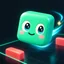
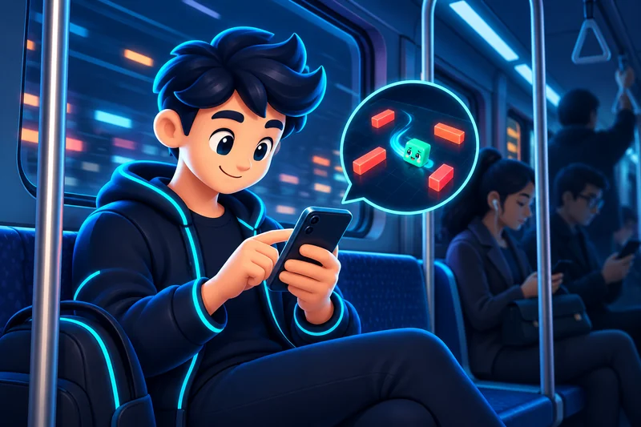
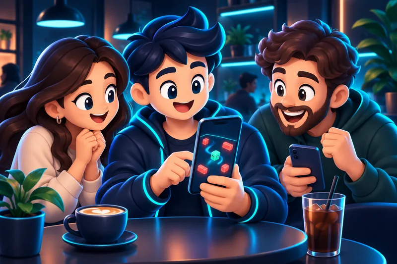
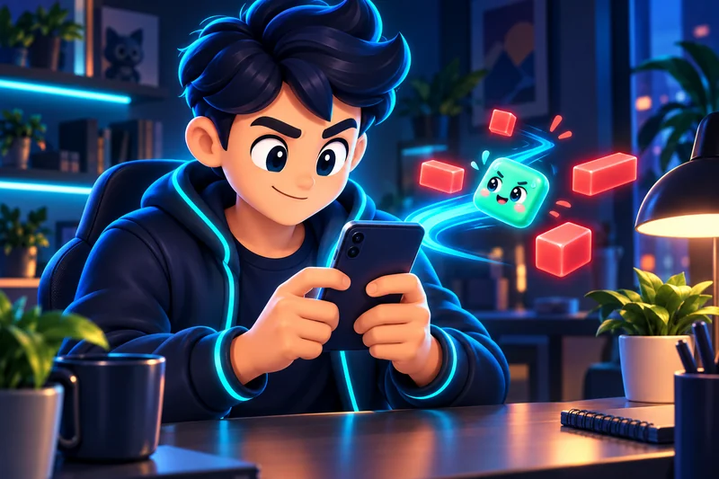
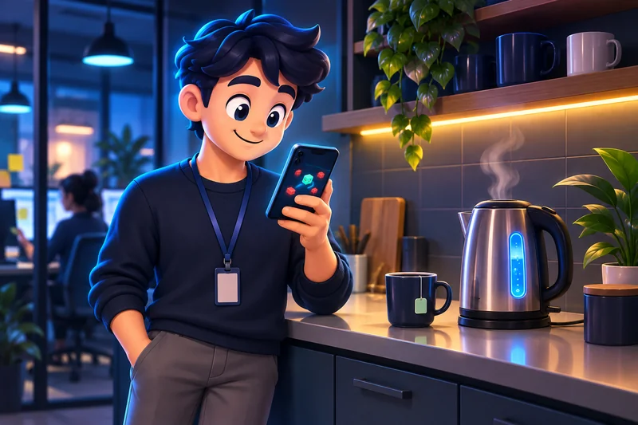
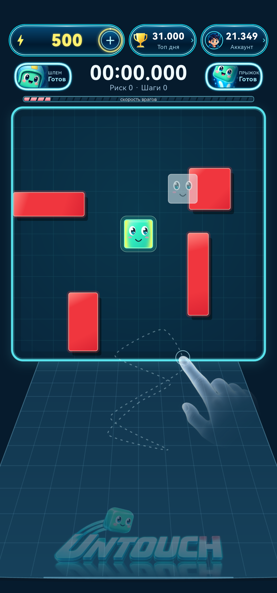
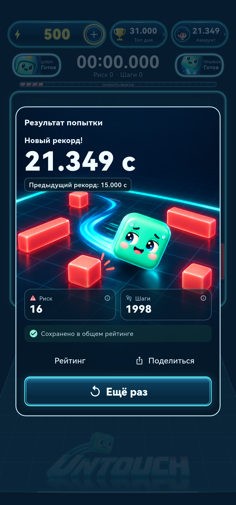

Сразу в игру
Открой Untouch в Telegram. Один кубик, движущиеся фигуры и понятная цель: не дай себя коснуться.

untouchВ Telegram ↗Уворачивайся. Держись дольше.
Три попытки — прямо здесь.
Коснись поля и веди кубик пальцем или мышью.
На компьютере можно играть стрелками.
Правила — в пару строк.
Всё остальное — твоя реакция.
Открой Untouch в Telegram. Один кубик, движущиеся фигуры и понятная цель: не дай себя коснуться.
Заметь свободный проход и успей увернуться. Продержись чуть дольше своей прошлой попытки.
Покажи результат другу, сравните попытки и попробуйте обойти друг друга. Общий рейтинг добавит азарта.
Когда есть свободная минутка.
Одному — или в компании.

Устроился на сиденье, до выхода ещё пара остановок. Короткий раунд помещается в эту паузу.

Попробуйте по очереди, сравните результаты и найдите самого ловкого. Следующая попытка — уже маленький реванш.

Разомни реакцию и внимание: замечай движение, быстро выбирай свободный проход и успевай менять направление.

Чайник в офисе ещё греется, кофе готовится или коллега задерживается? Скоротай свободную минутку за короткой игрой.
Мятный кубик — это ты. Коралловые фигуры — твой вызов. Время и способности всегда рядом с полем.
Кадры актуальной Android-версии 231, снятые на реальном телефоне. Показаны демонстрационные значения. В Telegram оформление может отличаться.


Версия для Telegram открывается по кнопке «В Telegram». Отдельно устанавливать её не нужно. Android доступен участникам закрытого теста Google Play. Версия для iPhone пока в разработке. На сайте есть демо на три попытки.
Играем вертикально. В полной игре веди пальцем по экрану: кубик следует за движением. В демо коснись поля и веди пальцем; на компьютере работают стрелки. Края удерживают кубик, касание фигуры завершает попытку.
Да — сравнивайте результаты своих попыток и смотрите общий рейтинг. Каждый играет свою попытку, а новый рекорд становится поводом для следующего вызова.
Это новый интерфейс Android-версии Untouch, снятый на реальном телефоне в тестовом режиме. Оформление опубликованной версии Telegram может отличаться.
Начни со своего результата.
Потом попробуй его улучшить.